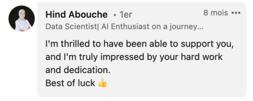
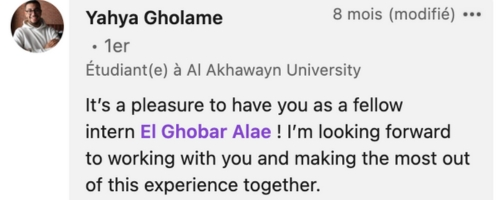

JE SUIS ELGHOBAR ALAE
ÉLÈVE INGÉNIEUR EN BUSINESS INTELLIGENCE & ANALYTICS
échouer encore, échouer mieux.
ÉLÈVE INGÉNIEUR EN BUSINESS INTELLIGENCE & ANALYTICS
échouer encore, échouer mieux.
Explorez mon univers Et découvrez la passion qui guide mes réalisations
ELGHOBAR ALAE
ÉLÈVE INGÉNIEUR EN BUSINESS INTELLIGENCE & ANALYTICS
Étudiant en deuxième année à l'ENSIAS, passionné par le domaine de la science des données
En tant qu'étudiant en deuxième année à l'ENSIAS, ma passion pour la science des données est le moteur de mon quotidien académique et personnel.
Animé par une curiosité insatiable, je me plonge dans l'étude approfondie de l'analyse de données, m'efforçant de maîtriser l'art de révéler des insights cachés dans les complexités des grands ensembles de données.
Mon parcours d'ingénieur-entrepreneur enrichit cette quête, m'apportant une compréhension holistique des affaires et de la technologie. Je suis formé pour comprendre non seulement les compétences techniques de l'ingénierie mais aussi les subtilités stratégiques et opérationnelles qui constituent le cœur d'une entreprise prospère.
Cette double compétence me prépare à être un innovateur et un leader capable de transformer des données brutes en décisions stratégiques et de piloter des projets avec une vision d'affaires aiguisée.
Il y a les détails qui façonnent ma singularité pour créer des résultats exceptionnels

J'ai toujours apporté des idées originales et innovantes qui ont contribué à résoudre des problèmes et à réaliser des projets inspirants. Ma capacité à penser de manière non conventionnelle et à générer des concepts novateurs a été un atout précieux pour chaque équipe à laquelle j'ai appartenu.

Mon engagement dans les activités scolaires a été profondément marqué par ma capacité à travailler harmonieusement au sein d'une équipe. J'ai toujours favorisé la collaboration et l'entraide, encouragé la diversité des opinions et assuré que chaque membre se sente valorisé et entendu.

Dans mes précédentes expériences, j'ai fait preuve d'une grande résilience face aux défis et aux revers. Chaque échec a été une opportunité de croissance, et ma capacité à rebondir rapidement et à maintenir ma motivation malgré les obstacles a été un trait distinctif de mon caractère.

Au fil de mes participations dans divers projets et clubs, je m'adapter rapidement aux situations changeantes. Mon aptitude à ajuster mes stratégies et mes approches en fonction des nouvelles circonstances , a été essentielle pour maintenir la fluidité et le succès des initiatives auxquelles j'ai contribué.
Mes compétences techniques sont le fruit d'une symphonie soigneusement orchestrée, chaque note accordée avec précision pour créer une harmonie fluide de connaissances et d'expertise
AI, Machine learning, Deep learning
Elasticsearch-Logstash-Kibana
PowerBI, Python, R
SQL Server, NoSQL, SSIS
SPSS, Analyse de données par R
Data Science en Action : Mes Réalisations en Lumière

Prédiction de Prêt Bancaire

Analyse des données d'un hopital
.png)
Analyse du comportement d'un user web à travers les logs
.png)
Système d'information d'un établissement scolaire
.png)
Développement d'un chatbot pour assistance médical pour les diabètiques
Ce projet complexe visait à élaborer un système de prédiction des demandes de prêt pour une institution bancaire. J'ai exploré divers algorithmes d'apprentissage automatique tels que le KNN (K-Nearest Neighbors), le MLP (Multilayer Perceptron), le SVM (Support Vector Machine), l'arbre de décision, le K-Means et le Naive Bayes afin de créer un modèle robuste capable de prédire avec précision les chances de succès des demandes de prêt. Cette approche a permis à la banque d'optimiser ses processus de prêt, de réduire les risques et d'améliorer son service client.
Pour ce projet intéressant dans le domaine de la santé, j'ai réalisé une analyse minutieuse des données provenant d'un hôpital. Cette analyse visait à comprendre les tendances, les modèles et les facteurs influençant les résultats cliniques. Nous avons examiné des données telles que le nombre de patients, le sexe, les régions d'origine des patients, ainsi que les durées d'hospitalisation pour optimiser les processus hospitaliers.
Ce projet avait pour but d'analyser le comportement des utilisateurs via les fichiers journaux du serveur pour détecter les activités suspectes en temps réel. J'ai utilisé Filebeat, Logstash, Kibana et Power BI pour mettre en place ce système de détection. Les fichiers journaux collectés étaient analysés par Logstash, avec des règles spécifiques pour détecter les modèles d'activité suspecte et les attaques malveillantes. Les données analysées étaient indexées dans Elasticsearch pour créer des tableaux de bord interactifs dans Kibana. Les techniques incluaient l'analyse comportementale et la détection d'anomalies. Des alertes en temps réel étaient générées pour les activités suspectes. Les tableaux de bord interactifs dans Kibana et les visualisations avancées dans Power BI offraient une vue complète de la sécurité.
Ce projet implique la conception et la réalisation d'un système informatique intégral pour une institution éducative. En utilisant Oracle Apex comme plateforme de développement, j'ai œuvré à créer un système fiable couvrant tous les aspects de la gestion scolaire, y compris l'administration des élèves, des enseignants, des cours, des emplois du temps et des ressources pédagogiques. Ce système a été conçu pour optimiser les opérations scolaires, favoriser la communication et simplifier la prise de décision au sein de l'établissement.
Ce projet vise à créer un chatbot intelligent pour le diabète, offrant un soutien personnalisé 24/7 et des alertes vitales. Il fournira des informations sur la maladie, des conseils nutritionnels et interprétera les niveaux de glycémie. Grâce à une interface conviviale et à la reconnaissance vocale en arabe, il sera accessible à tous, y compris aux analphabètes au Maroc. Ce chatbot promet d'améliorer la qualité de vie des personnes diabétiques en les aidant à gérer leur condition de manière autonome et éclairée.
Voix Inspirantes: Témoignages qui Illuminent Mon Chemin


Découvrez les instants les plus marquants de cette expérience
Mon itinéraire d'ingénieur-entrepreneur enrichit mon parcours, m'offrant une vision globale des enjeux technologiques et commerciaux. Formé pour appréhender non seulement les compétences techniques inhérentes à l'ingénierie, je maîtrise également les aspects stratégiques et opérationnels clés pour le succès d'une entreprise.


Cheminements et Évolutions : Réflexions sur mon Parcours
Juin
Bac Sc.Mathématique A: Période marquante
J'ai obtenu mon baccalauréat à Taza, un jalon significatif dans mon parcours éducatif. Ce succès représente bien plus qu'une simple réalisation académique ; il incarne le début d'une nouvelle ère, où mes aspirations et mes objectifs prennent forme, guidant ma trajectoire vers l'âge adulte avec sa détermination et son ambition.
Classes Préparatoires : Douce amertume
Juillet
L'étape des classes préparatoires MP à Meknès a marqué ma première expérience de vie indépendante, loin de ma famille. Malgré les défis et le stress intense des cours, cette période s'est révélée être une leçon essentielle dans la gestion du stress, l'adaptation et l'accomplissement d'objectifs. J'y ai également eu l'opportunité de rencontrer de nouveaux amis, avec qui j'ai partagé les hauts et les bas, renforçant ainsi nos liens dans l'adversité.
Septembre
Rejoindre L'ENSIAS : Une Évolution Inattendue
Mon entrée à l'ENSIAS a été une surprise qui a ouvert de nouvelles perspectives tant professionnelles que personnelles. J'y ai rencontré des esprits inspirants partageant mes passions. En approfondissant mes connaissances en Business Intelligence et Analytics, j'ai renforcé mes compétences techniques tout en explorant de nouveaux horizons. Cette période a également été une leçon d'épanouissement personnel, m'enseignant la gestion du stress, la concentration sous pression et le travail d'équipe efficace. Chaque projet était une opportunité de croissance, enrichissant à la fois mon parcours professionnel et personnel.
Stage révélateur chez EURAFRIC
Juillet
Mon stage de découverte chez EurAfric, la filiale IT de Bank of Africa, a été une immersion fascinante dans le monde professionnel. J'ai pu mettre en pratique les connaissances acquises lors de mes études. Dans cet environnement d'entreprise dynamique, j'ai eu l'opportunité d'explorer et de développer mes soft skills. Que ce soit en travaillant en équipe, en faisant preuve de créativité, ou en démontrant ma capacité d'adaptation, j'ai pu témoigner d'un profil flexible et adaptable. Ce stage m'a permis de grandir professionnellement et personnellement, en m'ouvrant de nouvelles perspectives sur le monde du travail et en renforçant ma confiance dans mes capacités.
Découvrez Mes Passions
Me voici !